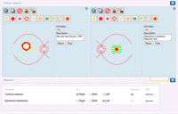

|
Home
A user's home page displays news items and clinical alerts (messages associated with the patient record)
|
|
Scanned letters
Incoming correspondence is scanned in and displayed
|
|  |
Drawing
OpenEyes includes a customised, intelligent, medical drawing package
|
|
Fields
Investigations such as visual fields can be imported and displayed
|
|
Letters
Outgoing correspondence can be easily written, or automatically generated
|